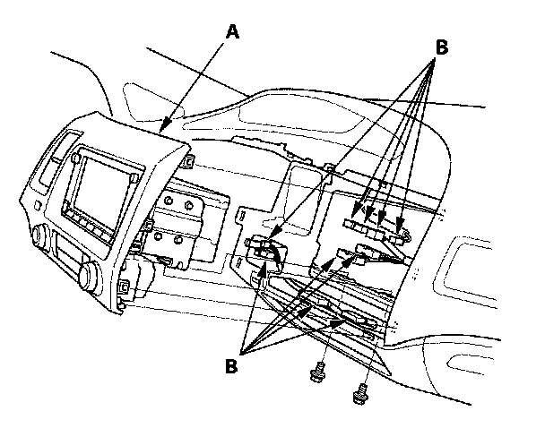
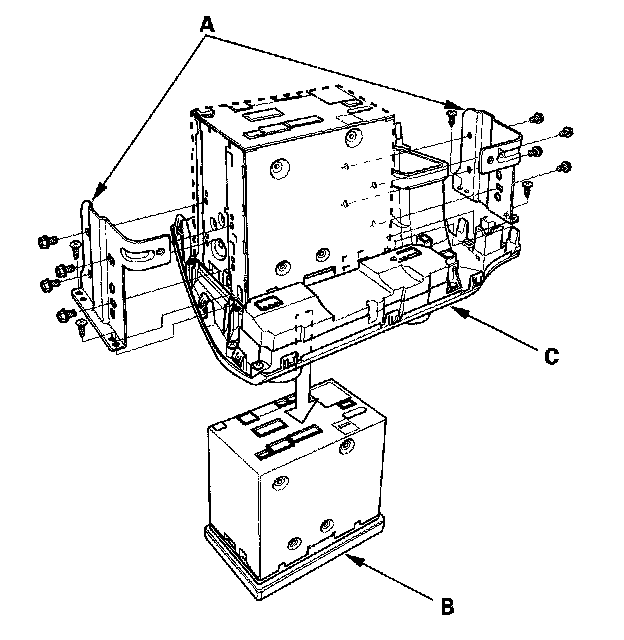

Navigation Module: Service and Repair
Navigation Unit Removal/InstallationSRS components are located in this area. Review the SRS component location, 4-door, 2-door.
Also review the precautions and procedures in the SRS section before doing repairs or service.
NOTE:
- Put on gloves to protect your hands.
- Take care not to scratch the dashboard and related parts.
- Lay a workshop towel under the parts when working on them to protect the face panel from scratches or other damage.
- Do not work in a dusty or dirty place.
- Discharge static electricity from your body before and during the work.
- Do not touch the circuit board(s) with your bare hands.
- Do not work with dirty hands.
- Be careful not to fold the flat plate cable.
- Do not touch the terminal connector of the flat plate cable with your bare hands. (If you have touched it, wipe it off thoroughly.)
- Before replacing the navigation unit, make sure to remove the customer's navigation DVD, and their Audio CD, or PC Card. Remanufactured navigation units do not come with a navigation DVD. Re-install the customer's navigation DVD, audio CD, and audio PC Card into the new Remanufactured unit. If the navigation display won't open, manually remove the navigation DVD, Audio CD, and PC Card.
1. Make sure you have the 4-digit anti-theft code for the navigation system, then write down the audio presets.
2. Remove the subdisplay visor.

3. Remove the center pocket hole lid and bolts, then pull out the center panel (A).
4. Disconnect the connectors (B), then remove the center panel.

5. Remove the screws, brackets (A), and the navigation unit (B) from the center panel (C).
6. Install the navigation unit in the reverse order of removal, and note these items:
- Make sure all connectors and the antenna lead are secure.
- Enter the anti-theft code for the navigation unit, then enter the audio presets.